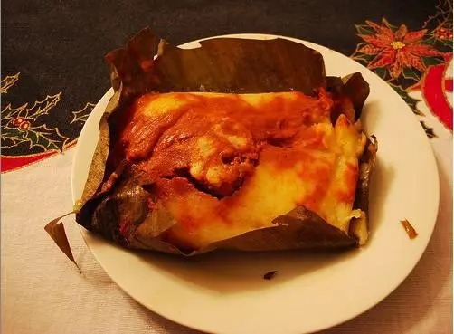
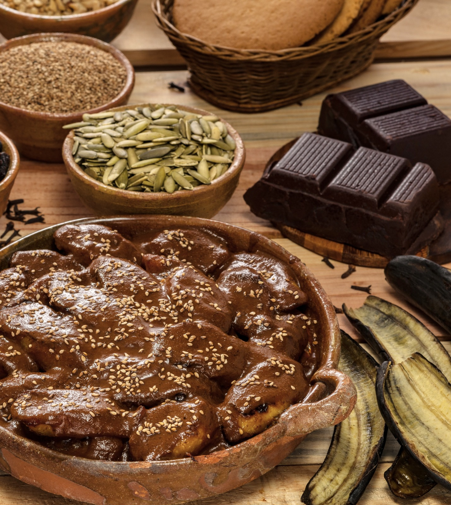
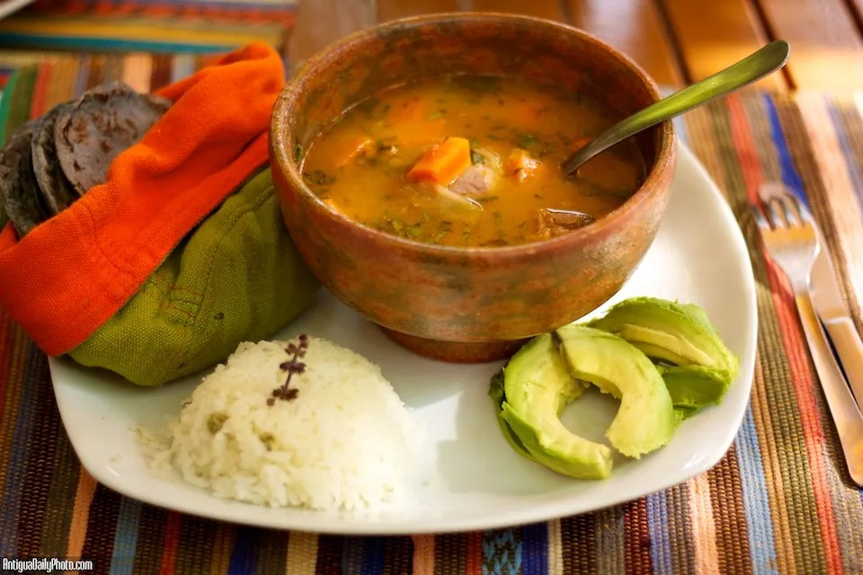

Tamales Colorados
Masa de maíz con recado rojo y carne, envueltos en hoja de plátano. Tradicionales en festividades.

Masa de maíz con recado rojo y carne, envueltos en hoja de plátano. Tradicionales en festividades.

Plátanos fritos bañados en una salsa espesa de chocolate y especias. Se decora con ajonjolí.

Caldo nutritivo de gallina criolla con verduras. Tradicionalmente se sirve con hierbabuena y limón.